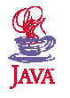

Компания FirstPerson
Крупные компании-производители, такие как Mitsubishi Electric,
France Telecom, Dolby Labs, заинтересовались новой технологией,
начались переговоры. Шеридан подготовил бизнес-план с оригинальным
названием "Beyond the Green Door"
("За зеленой дверью"), в котором
предложил Sun учредить дочернюю компанию для продвижения платформы
OaK на рынок. 1 ноября 1992 года
создается компания FirstPerson,
которую возглавила Вэйн Роузинг (Wayne Rosing), перешедшая из Sun
Labs. Арендуется роскошный офис, число сотрудников возрастает с 14
до 60 человек.
Однако позднее оказалось, что стоимость подобного решения
(процессор, память, экран) составляет не менее $50. Производители же
бытовой техники не привыкли платить значительные суммы за
дополнительную функциональность, облегчающую использование их
продуктов.
В это время внимание компьютерной индустрии захватывает идея
интерактивного телевидения, создается ощущение, что именно оно
станет следующим революционным прорывом. Поэтому, когда в марте 1993
года Time Warner объявляет конкурс для производителей компьютерных
приставок к телевизору для развертывания пробной сети интерактивного
телевидения, FirstPerson полностью переключается на эту задачу. И
снова неудача - победителем оказывается Джеймс Кларк (James Clark),
основатель Silicon Graphics Inc., несмотря на то, что технологически
его предложение уступает OaK. Впрочем,
через год проект Time Warner
и SGI проваливается, а Джеймс Кларк создает компанию Netscape,
которая еще сыграет важную роль в успехе Java.
Другим потенциальным клиентом стал производитель игровых
приставок 3DO. Понадобилось всего 10 дней, чтобы портировать
OaK на
эту платформу, однако после трехмесячных переговоров директор 3DO
потребовал полные права на новый продукт, и сделка не состоялась.
Наконец, в начале 1994 года стало понятно, что идея
интерактивного телевидения оказалась нежизнеспособной. Ожиданиям не
суждено было стать реальностью. Анализ состояния FirstPerson
показал, что компания не имеет ни одного клиента или партнера и ее
дальнейшие перспективы довольно туманны. Руководство Sun требует
немедленного составления нового бизнес-плана, позволяющего компании
снова приносить прибыль.
World Wide Web
В погоне за призраком интерактивного телевидения многие участники
компьютерного рынка пропустили поистине эпохальное событие. В апреле
1993 года Марк Андриссен (Marc Andreessen) и Эрик Бина (Eric Bina),
работающие в Национальном центре суперкомпьютерных приложений
(National Center for Supercomputing Applications, NCSA) при
университете Иллинойс, выпустили первую версию графического
браузера
("обозревателя") Mosaic 1.0 для WWW. Хотя Internet существовал на
тот момент уже около 20 лет, имеющимися протоколами связи (FTP,
telnet и др.) пользоваться было очень неудобно и Глобальная Сеть
использовалась лишь в академической и государственной среде. Mosaic
же основывался на новом языке разметки гипертекстовых документов
(HyperText Markup Language, HTML),
который с 1991 года
разрабатывался в Европейском институте физики частиц (CERN)
специально для представления информации в Internet. Этот формат
позволял просматривать текст и изображения, а главное - поддерживал
ссылки, с помощью которых можно было одним нажатием мыши перейти как
на другую часть той же страницы, так и на страницу, которая могла
располагаться совсем в другой части сети и в любой точке планеты.
Именно такие перекрестные обращения, используя которые, пользователь
мог незаметно для себя посетить множество узлов Internet, и
позволили считать все HTML-документы
связанными частями единого
целого - Всемирной Паутины (World Wide Web, WWW).
И самое важное - все эти новые достижения были совершенно
бесплатны и доступны для всех желающих. Впервые обычные пользователи
персональных компьютеров безо всякой специальной подготовки могли
пользоваться глобальной сетью не только для решения рабочих
вопросов, но и для поиска информации на самые разные темы.
Количество документов в пространстве WWW стало расти
экспоненциально, и очень скоро сеть Internet стала поистине
Всемирной. Правда, со временем обнаружилось, что такой способ
организации и хранения информации очень напоминает свалку, в которой
крайне трудно найти данные по какому-нибудь конкретному вопросу,
однако эта тема относится к совершенно другому этапу развития
компьютерного мира. Итак, каким-то непостижимым образом Sun не
замечает зарождения новой эпохи. Технический директор Sun впервые
увидел Mosaic лишь три месяца спустя! И это притом, что около 50%
серверов и рабочих станций в сети Internet были произведены именно
Sun.
Новый бизнес-план FirstPerson ставил цель, которая была неким
промежуточным шагом от интерактивного телевидения к возможностям
Internet. Идея заключалась в создании платформы для кабельных
компаний, пользователями которой были бы обычные владельцы
персональных компьютеров, объединенные сетями таких компаний.
Используя технологию OaK, разработчики
могли бы создавать
приложения, по функциональности аналогичные программам,
распространяемым на CD-ROM, однако обладающие интерактивностью,
позволяющей людям обмениваться любой информацией через сеть.
Ожидалось, что такие сети в итоге и разовьются в интерактивное
телевидение, и тогда OaK станет полноценным
решением для этой
индустрии. Об Internet и Mosaic пока не говорилось ни слова.
По многим причинам этот план руководство Sun не устроил (он не
вполне соответствовал главному ожиданию - новая разработка должна
была привести к увеличению спроса на продукты Sun). Из-за отсутствия
перспектив половина сотрудников FirstPerson была переведена в только
что созданную команду Sun Interactive, которая продолжила заниматься
мультимедиа-сервисами уже без OaK. Все
предприятие оказалось под
угрозой бесславной кончины, однако в этот момент Билл Джой снова
оказал поддержку проекту, который вскоре дал миру платформу
Java.
Когда создатели FirstPerson, наконец, обратили внимание на
Internet, они поняли, что функциональность тех сетевых приложений,
для которых создавался OaK, очень близка
к WWW. Билл Джой вспомнил,
как он двадцать лет назад принимал участие в разработке UNIX в
Беркли и затем эта операционная система получила широчайшее
распространение благодаря тому, что ее можно было загрузить по сети
бесплатно. Такой принцип бесплатного распространения коммерческих
продуктов создал саму WWW, тем же путем компания Netscape вскоре
стала лидером рынка браузеров,
так многие технологии получили
возможность захватить долю рынка в кратчайшие сроки. Эти новые идеи
при поддержке Джоя окончательно убедили руководство Sun, что
Internet поможет воскресить платформу OaK
(кстати, этот новый проект
поначалу называли "Liveoak"). В итоге Джой садится писать очередной
бизнес-план и отправляет Гослинга и Нотона начинать работу по
адаптации OaK для Internet. Гослинг
пересматривает программный код
платформы, а Нотон берется за написание "убойного" приложения,
которое сразу бы продемонстрировало всю мощь OaK
для Internet.
В самом деле, эти технологии прекрасно подошли друг другу. Языки
программирования всегда играли важную роль в развитии компьютерных
технологий. Мэйнфреймы не были особенно полезны, пока не появился
Cobol. Благодаря языку Fortran от IBM, компьютеры стали широко
применяться для научных вычислений и исследований. Basic - самый
первый продукт от Microsoft - позволил всем программистам-любителям
создавать программы для своих персональных компьютеров. Язык С++
стал основой для развития графических пользовательских
интерфейсов ,
таких как Mac OS и Windows. Создатели OaK
сделали все, чтобы эта
технология сыграла такую же роль в программировании для Internet.
Несмотря на то, что к середине 1994 года WWW достиг невиданных
размеров (конечно, по меркам того времени), web-страницы по-прежнему
были скорее похожи на обычные бумажные издания, чем на интерактивные
приложения. По большей части вся работа в сети заключалась в
отправке запроса на web-сервер и получении ответа, который содержал
обычный статический HTML-файл, отображаемый
браузером на стороне
клиента. Уже тогда функциональность web-серверов расширялась с
помощью CGI (Common Gateway Interface). Эта технология позволяла по
запросу клиента запускать на сервере обычную программу и ее
результат отсылать обратно в качестве ответа. Поскольку в то время
скорость каналов связи была невысокой (хотя, похоже, пользователи
никогда не будут удовлетворены возможностями аппаратуры), клиент мог
ждать несколько минут, чтобы лишь увидеть сообщение о том, что он
ошибся в одной букве запроса. Динамическое построение графиков при
таком способе реализации означало бы генерацию GIF-файлов в реальном
времени. А ведь зачастую клиентские машины являются полноценными
персональными компьютерами, которые могли бы брать значительную
часть работы взаимодействия с пользователем на себя, разгружая
серверы.
Вообще, клиент-серверная архитектура, просто необходимая для
большинства сложных корпоративных (enterprise) приложений, обладает
рядом существенных технических сложностей. Основная идея -
разместить общие данные на сервере, чтобы создать единое
информационное пространство для работы многих пользователей, а
программы, отображающие и позволяющие удобно редактировать эти
данные, выполняются на клиентских машинах. Очень часто в корпорации
используется несколько аппаратных платформ (это может быть как
"историческое наследие", так и следствие того, что различные
подразделения, решая свои задачи, нуждаются в различных
компьютерах). Следовательно, приложение необходимо развивать сразу в
нескольких вариантах, что существенно увеличивает стоимость
поддержки. Кроме того, обновление клиентской части означает, что
нужно перенастроить все компьютеры компании в кратчайший срок. А
ведь обновлениями часто занимаются несколько групп разработчиков.
Попытка придать Internet-браузерам
возможности полноценного
клиентского приложения встречает еще большие трудности. Во-первых,
обычные сложности предельно возрастают - в Internet представлены
практически все существующие платформы, а количество и
географическая распределенность пользователей делает быстрое
обновление просто невозможным. Во-вторых, особенно остро встает
вопрос безопасности.
Через сеть удивительно быстро распространяется
не только важная информация, но и вирусы. Текстовая информация и
изображения не несут в себе никакой угрозы для клиентской машины,
другое дело - исполняемый код. Наконец, приложения с красивым и
удобным графическим интерфейсом,
как правило, имели немаленький
размер, недаром основным средством их распространения были CD-ROM'ы.
Понятно, что для Internet необходимо было серьезно поработать над
компактностью кода.
Если оглянуться на историю развития OaK,
становится понятно, что
эта платформа удивительным образом отвечает всем перечисленным
требованиям Internet-программирования, хотя и создавалась во
времена, когда про WWW никто даже и не думал. Видимо, это говорит о
том, насколько верно предугадали развитие индустрии участники
проекта Green.
Возрождение OaK
Для победного выхода OaK не хватало
последнего штриха - браузера,
который поддерживал бы эту технологию. Именно он должен был стать
тем самым "убойным" приложением Нотона, которое завершало почти
пятилетнюю подготовительную работу перед официальным объявлением
новой платформы.
Браузер назвали WebRunner.
Нотону потребовался всего один
выходной, чтобы написать основную часть программы. Это было в июле,
а в сентябре 1994 года WebRunner уже демонстрировался руководству
Sun. Небольшие программы, написанные на OaK
для распространения через Internet, назвали
апплетами
(applets).

Рис.
Следующая демонстрация происходила на
конференции, где встречались разработчики Internet-приложений и
представители индустрии развлечений. Когда Гослинг начал презентацию
WebRunner, слушатели не проявили большого интереса, решив, что это
просто клон Mosaic. Тогда Гослинг провел мышкой над сложной
трехмерной моделью химической молекулы.
Следуя за курсором, модель поворачивалась по всем направлениям!
Сейчас данная функция, возможно, не производит такого впечатления,
однако в то время это было подобно переходу от картинки к
кинематографу. Следующий пример демонстрировал анимированную
сортировку. Вначале изображался набор отрезков разной длины. Затем
синяя и красная линии начинали бегать по этому набору, сортируя
отрезки по размеру. Пример тоже нехитрый, однако наглядно
демонстрирующий, что на стороне клиента появилась полноценная
программная платформа. Оба эти апплета
сейчас являются стандартными примерами и входят в состав
Java Development Kit любой
версии. Успех демонстрации, которая закончилась бурными
аплодисментами, показал, что OaK и WebRunner
способны устроить
революцию в Internet, так как все участники конференции по-другому
взглянули на возможности, которые предоставляет Всемирная Сеть.
Кстати, в начале 1995 года, когда стало ясно, что официальное
объявление уже не за горами, за дело взялись маркетологи. В
результате их исследований OaK был переименован в
Java, а WebRunner
стал называться HotJava.
Многие тогда недоумевали, что же
послужило поводом для такого решения. Легенда гласит, что
Java - это
сорт кофе (такой кофе действительно есть), который очень любили
программисты. Видимо, похожим образом родилось и название
HotJava
("горячая Java"). Тема кофе навсегда
останется в названиях и логотипах (технология создания компонентов названа
Java Beans
- зерна кофе, специальный формат для архивирования файлов с
Java-программами JAR - банка с кофе и т.д.),
а сам язык критики
стали называть "для кофеварок". Впрочем, сейчас все уже привыкли и
не задумываются над названием, возможно, на это и было рассчитано (а
тем, кто продолжает выражать недовольство, приводят альтернативные
варианты, которые рассматривались тогда - Neon, Lyric, Pepper или
Silk).
Согласно плану, спецификация Java,
реализация платформы и HotJava
должны были свободно распространяться через Internet. С одной
стороны, это позволяло в кратчайшие сроки распространить технологию
по всему миру и сделать ее стандартом де-факто для
Internet-программирования. С другой стороны, при участии всего
сообщества разработчиков, которые высказывали бы свои замечания,
можно было гораздо быстрее устранить все возможные ошибки и
недоработки. Однако в конце 1994 года лишь считанные копии были
распространены за пределы Sun. В феврале 1995 года выходит,
возможно, первый пресс-релиз, сообщающий, что вскоре будут доступны
альфа-версии OaK и WebRunner.
Когда это произошло, команда стала подсчитывать случаи загрузки
их продукта для просмотра. Вскоре пришлось считать уже сотнями.
Затем решили, что если удастся достигнуть 10.000, то это будет
просто ошеломляющий успех. Ждать пришлось совсем не так долго, как
можно было предположить. Интерес нарастал лавинообразно, после
просмотров приходило большое количество писем и мощности
Internet-канала стало не хватать. На письма всегда отвечали очень
подробно, что поначалу можно было делать, не отрываясь от работы.
Затем по очереди стали назначать одного разработчика, чтобы он в
течение недели только писал ответы. Наконец, потребовался
специальный сотрудник, так как приходило уже по 2-3 тысячи писем в
день. Вскоре руководство Sun осознало, что такой мощный успех
Java
не имеет никакого бюджета или плана для рекламы и других акций
продвижения на рынок. Первым шагом в этом направлении становится
публикация 23 марта 1995 года в газете Sun Jose Mercury News статьи
с описанием новой технологии, где был приведен адрес официального
сайта http://java.sun.com/,
который и посей день является основным источником информации по
Java.
Java выходит в свет
Наконец, вся подготовительная работа стала подходить к своему
логическому завершению. Официальное объявление
Java, уже получившей
широкое признание и подающей большие надежды, должно было произойти
на конференции SunWorld. Ожидалось, что это будет короткое
информационное объявление, так как главная цель этого мероприятия -
UNIX-системы. Однако все произошло не так, как планировалось.
В четыре часа утра в день конференции, после длинных и сложных
переговоров, Sun подписывает важнейшее соглашение. Вторая сторона -
компания Netscape, основанная в апреле 1994 года Джеймсом Кларком
(он уже сыграл роль в судьбе OaK два
года назад, когда перехватил
предложение от Time Warner) и Марком Андриссеном (создателем NCSA
Mosaic). Эта компания стала лидером рынка
браузеров после того, как
в декабре 1994 года вышла первая версия Netscape Navigator, которая
была открыта для бесплатного некоммерческого использования, что
позволило занять на тот момент 75% рынка.
23 мая 1995 года технологии Java и
HotJava были официально
объявлены Sun и тогда же представители компании сообщили, что новая
версия самого популярного браузера
Netscape Navigator 2.0 будет
поддерживать новую технологию. По сути, это означало, что отныне
Java становится такой же неотъемлемой
частью WWW, как и HTML. Уже
второй раз презентация закончилась овацией - победное шествие
Java началось.
|